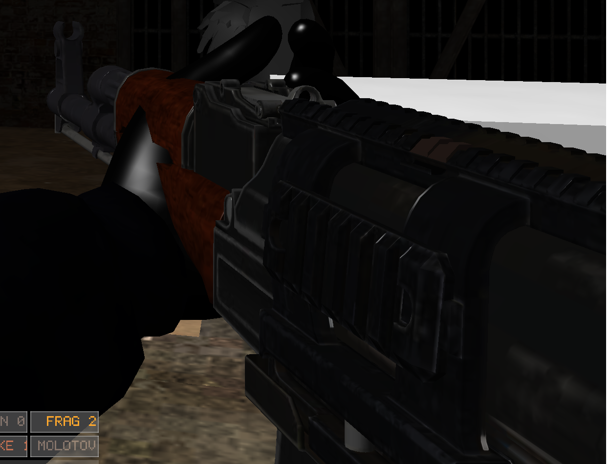
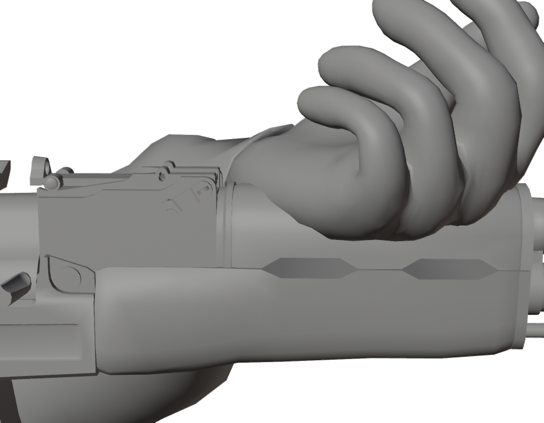
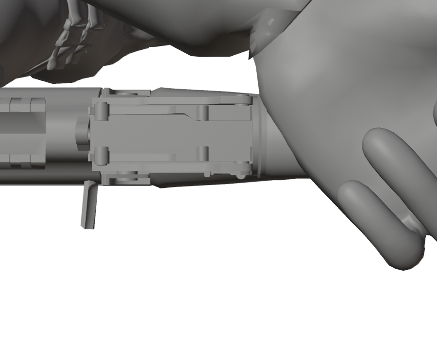
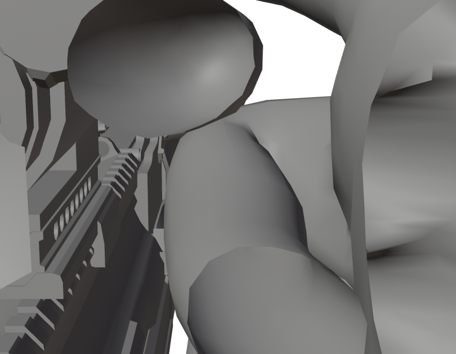

The weak hand had stopped meeting the handguard. The pose itself was measured carefully — against the wrong thing. Here is the rig set up to measure it against the right one.
The grip constants in grip_pose.rs come from a hand posed in Blender and read
back out of an exported glTF. That part was sound. What was not sound was the reference:
the hand was posed against a dummy tube placed by eye.
The game does not solve against a tube. It solves against Socket_FrontGrip,
the weapon mesh's own node. Every centimetre between the tube and that socket came through
as a hand that misses the gun.

The Grip empty is now parented to Socket_FrontGrip with an identity
parent inverse, so it is the socket: same position, same orientation, +Y down the
bore and +Z up — which is the convention read_grip.py asks for
and the convention every weapon here is authored in.
| Quantity | Value | Where it comes from |
|---|---|---|
Socket_FrontGrip |
(−0.0049, 0.0029, 0.3381) | Node in ak47_scope.glb, metres from the muzzle, no rotation |
| Blender position | (−0.0049, −0.3381, 0.0029) | Same point, Z-up, +Y down the bore |
| Front to rear grip | 27.6 cm | Two hands on a rifle; the socket is where a handguard is |
| Socket to wrist | 6.4 cm | As placed in the starting pose below |
Palm down, laid over the handguard from the left — not cupped from underneath. The wrist is turned so the knuckles run across the bore rather than along it. Fingers are still straight; that is the part left to pose.



exec(open("/Users/huyvu8051/projects/zombie_assets/tools/read_grip.py").read())It prints the three fields GripPose wants: the wrist's turn in the socket's
frame, where the socket sits inside the hand bone, and the fifteen finger rotations.
It is relative to a rest orientation the importer invents. Setting a finger to
0.436 in Blender writes 0.094 into the glTF. So the reader exports
a scratch .glb and reads the numbers back out of that.
Two export flags decide whether any of it survives:
export_rest_position_armature and export_reset_pose_bones both
default to true, and left alone they write the bind pose however the hand was posed. The
numbers looked plausible and were the rig's own, not anyone's work.